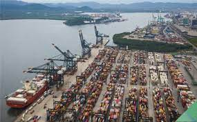
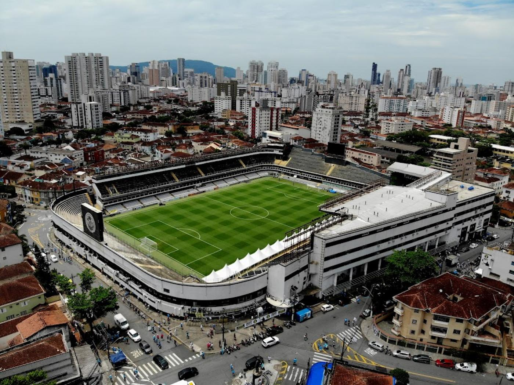
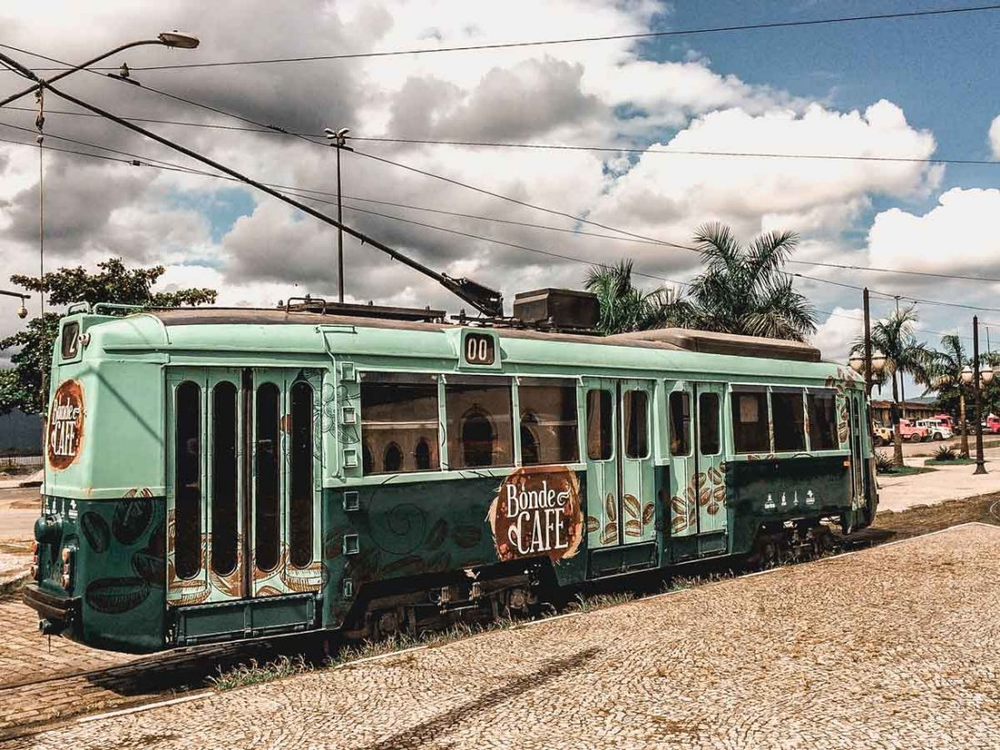
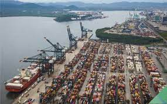
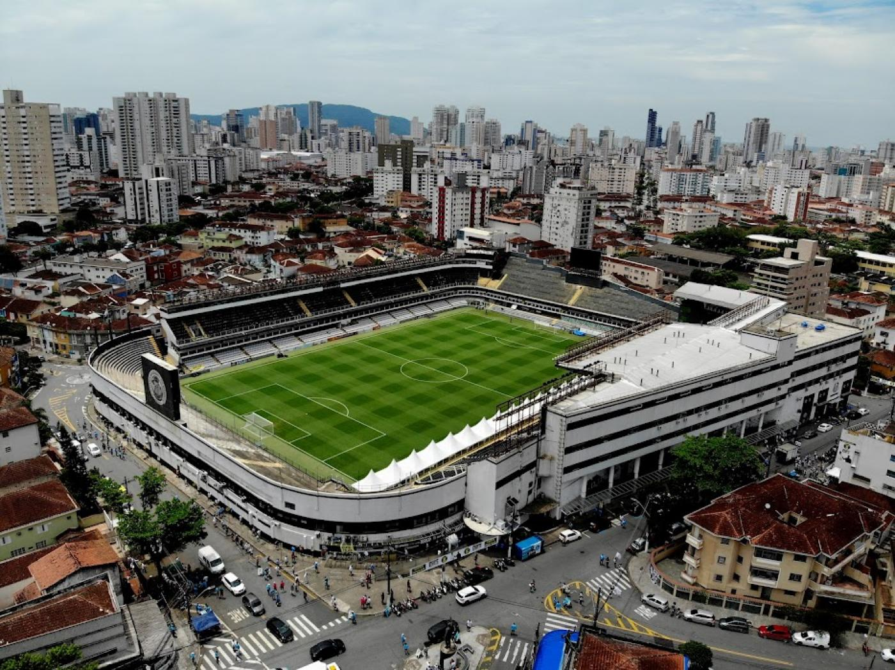
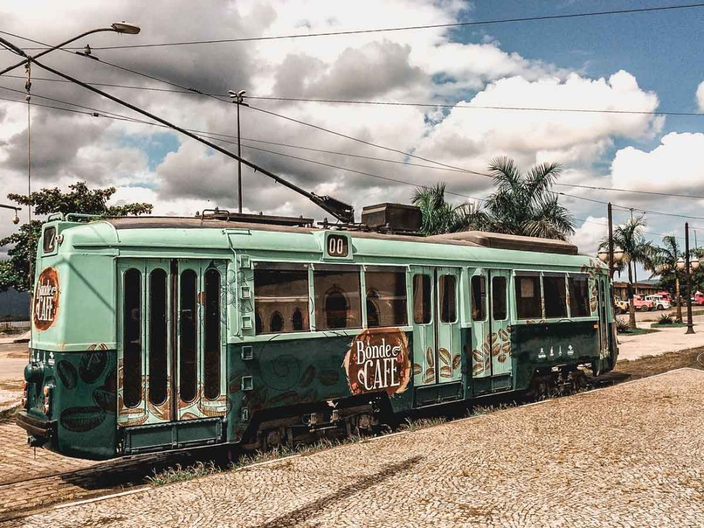
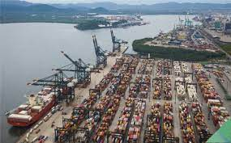
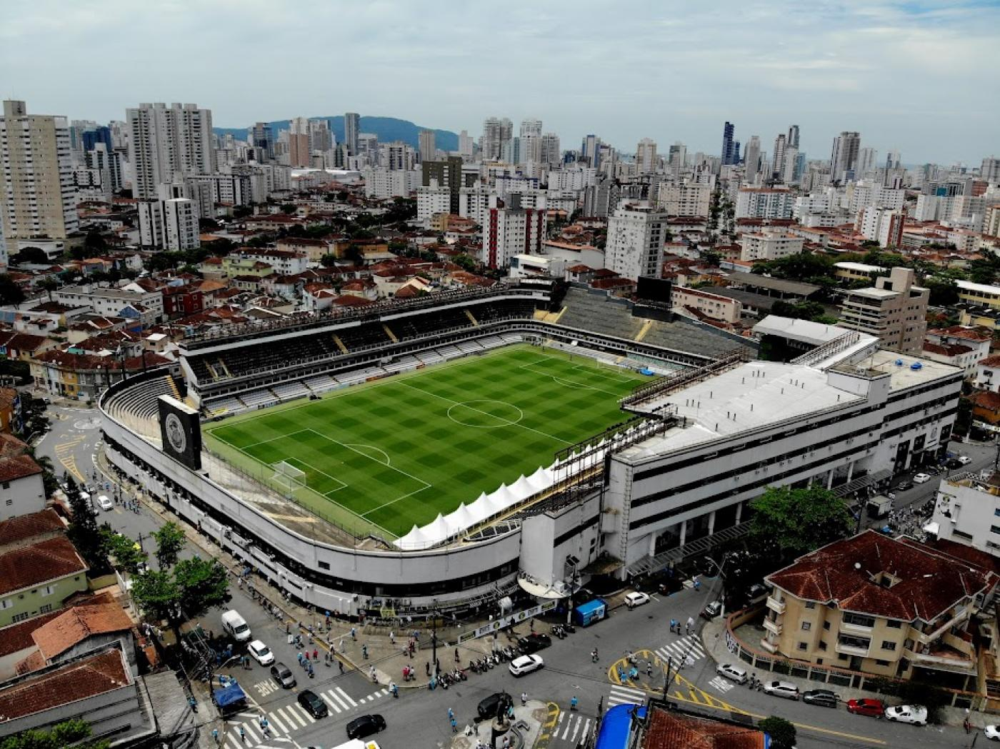
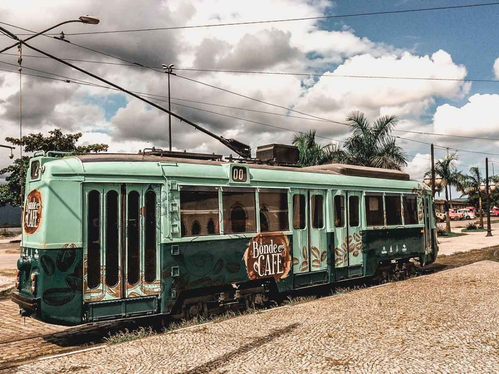
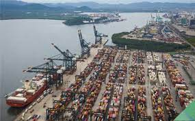
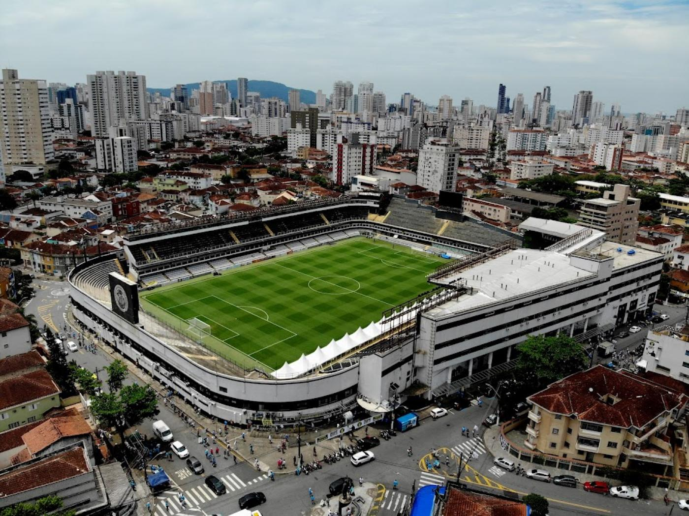
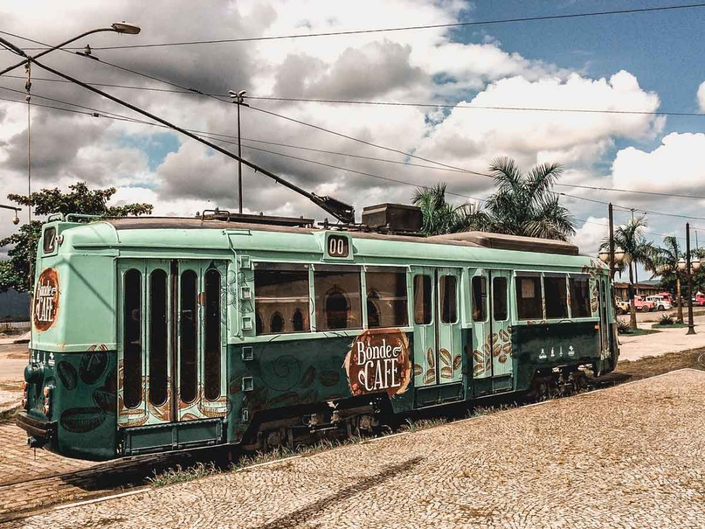
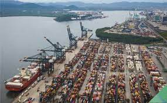
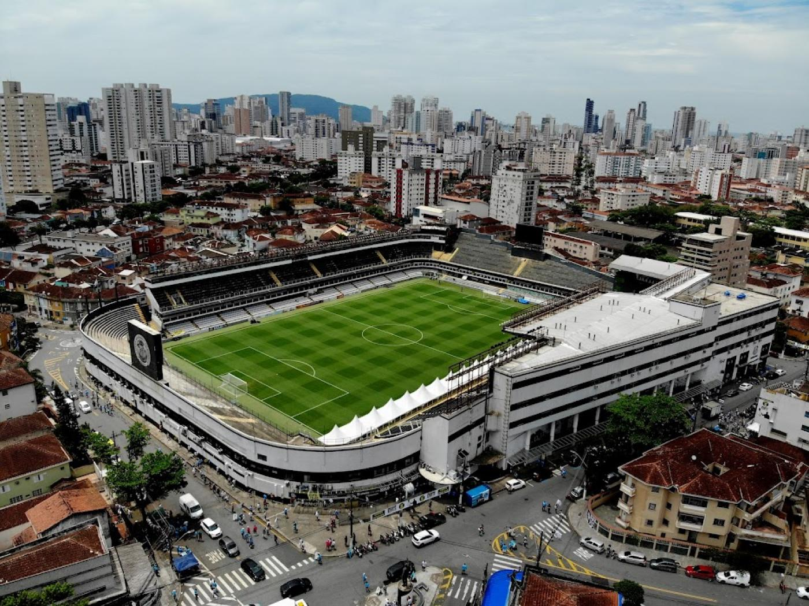
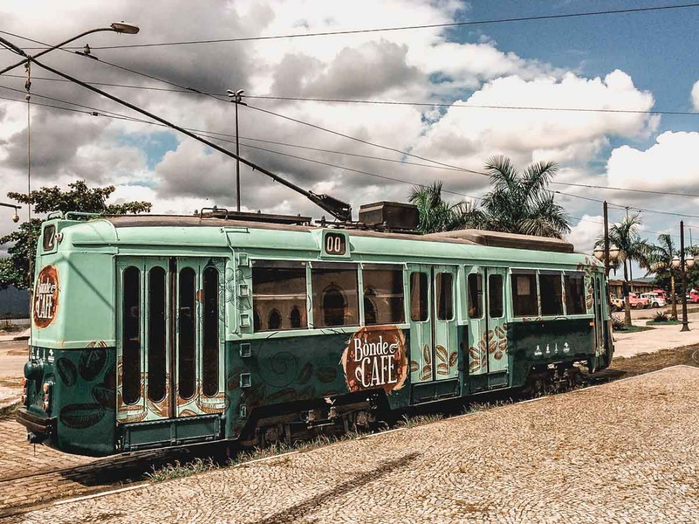
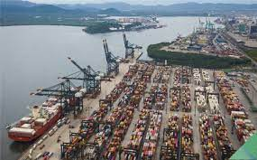
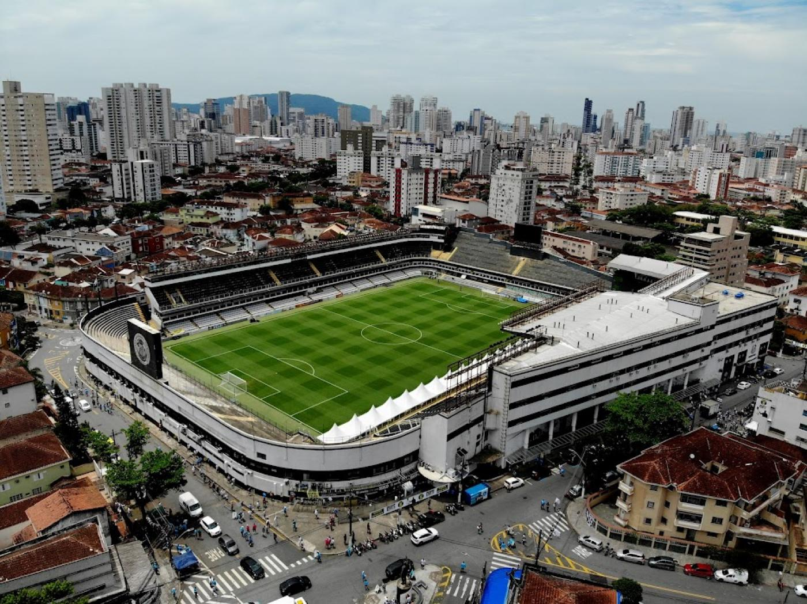
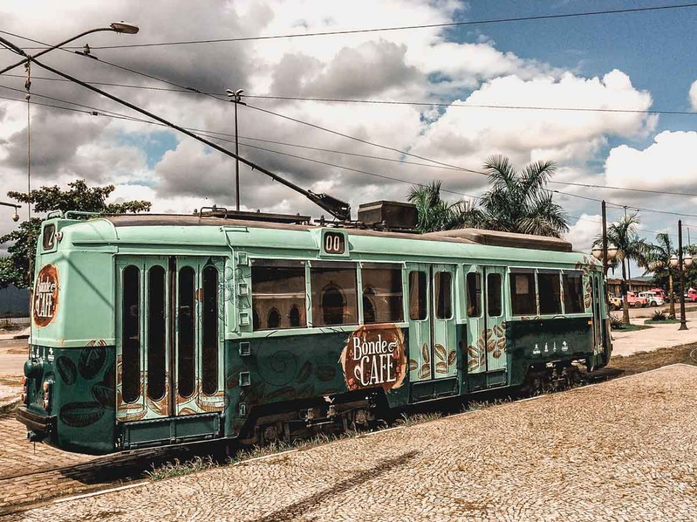
Atribui-se a fundação de Santos a Brás Cubas, sertanista português que, em 1536, recebeu a mais vasta sesmaria do litoral da Capitania de São Vicente. Em 1543, Brás Cubas instalou às margens da baía a Casa de Misericórdia de Todos os Santos para abrigar doentes dos navios que chegavam da metrópole.Com a maior participação econômica da citada região, abriga o maior porto da América Latina, o principal responsável pela dinâmica econômica da cidade ao lado do turismo, da pesca e do comércio.
Bolsa de Café, ou o Palácio da Bolsa Oficial de Café, é um museu localizado na rua XV de Novembro, no centro histórico do município de Santos, estado de São Paulo, Brasil. Após um restauro realizado em 1998, o palácio foi reinaugurado como o Museu do Café.Primeiramente instalada em um salão alugado no centro da cidade, a Bolsa do Café transferiu-se em 1922 para o palácio, construído especialmente para suas atividades, que funcionou até fins da década de 1970, quando foi abandonado.
O Gonzaga é um bairro nobre da cidade de Santos. A Praça da Independência, situada no Gonzaga é um ponto de referência do bairro, local onde são feitas manifestações, apresentações e comemorações. O bairro do Gonzaga, fica delimitado pela orla da praia, os canais 2 e 3, e pela Avenida General Francisco Glycerio.
O Estádio Urbano Caldeira, mais conhecido como Vila Belmiro, é um estádio de futebol localizado no bairro homônimo, na cidade de Santos, estado brasileiro de São Paulo. Pertence ao Santos Futebol Clube e tem capacidade para 16.899 mil pessoas, o que faz dele o maior da Baixada Santista.
| Nome do prefeito | Ano eleito | Partido | |
|---|---|---|---|
| Rogério Santos | 1º de janeiro de 2021 | PSDB | Atual |
| Paulo Alexandre Barbosa | 1º de janeiro de 2017 | PSDB | |
| Paulo Alexandre Barbosa | 1º de janeiro de 2013 | PSDB | |
| João Paulo Papa | 1º de janeiro de 2009 | PSDB |
| Dados tecnicos baseados em 6 pontos , sendo eles Populaçao, trabalho e rendimento, educação, economia, saúde, território e ambiente | ||
|---|---|---|
| POPULAÇÃO | População estimada [2021] | 433.991 pessoas |
| TRABALHO E RENDIMENTO | Salário médio mensal dos trabalhadores formais | 3,2 salários mínimos |
| EDUCAÇÃO | Matrículas no ensino fundamental | 45.501matrículas |
| ECONOMIA | PIB per capita | R$ 52.509,91 |
| SAÚDE | Mortalidade Infantil | 10,08 óbitos por mil nascidos vivos |
| TERRITÓRIO E AMBIENTE | Área da unidade territorial | 281,033km² |
Todos os dados usados na tabela sao fornecidos pelo IBGE : Site do IBGE